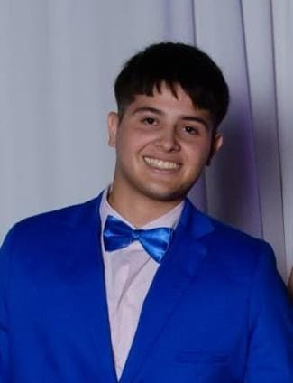

Curriculum

- Nombre: Jeremías José Navarro
- Acerca de mí: Soy un estudiante de la UNRAF de segundo año de la carrera de Diseño de Videojuegos y Entretenimiento Digital. Mi saga de videojuegos favorita es Pokémon, siendo mi favorito Pokémon Escarlata y Purpura, me interesa mucho el mundo de la programación y arte, principalmente arte 3D.
- Habilidades: Cuento con limitado conocimiento en dibujo, eh hecho distintas actividades en mi vida como Tae-kwon-do, un breve curso de programación en Godot.
- Educación: Poseo el secundario completo en una escuela tecnica y un pequeño titulo en programación.
- Contactos: jeremiasnavarro456@gmail.com